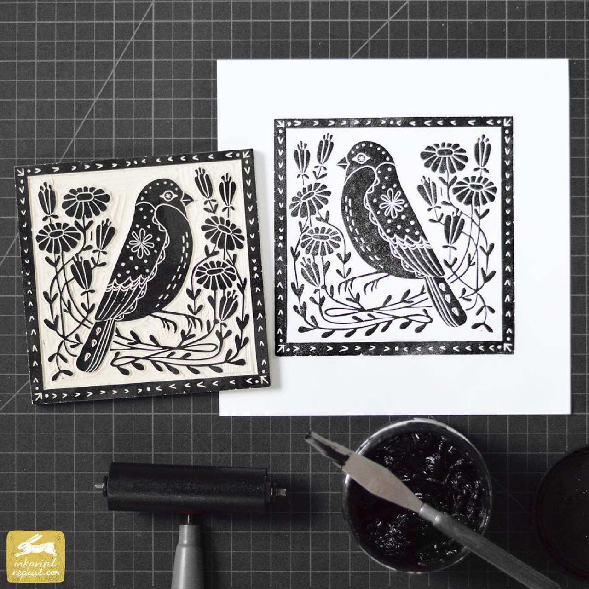

Underwater photography documents marine environments, aquatic life, and ocean phenomena, employing specialized equipment and techniques adapted to the unique challenges of working beneath water's surface. Underwater photographers must manage technical variables including water clarity, light penetration, and pressure while creating images that celebrate marine biodiversity and ocean environments. Contemporary underwater photography increasingly engages with conservation themes, documenting the impact of climate change and human activity on ocean ecosystems. The genre encompasses scientific documentation, artistic interpretation, and environmental advocacy, demonstrating photography's capacity to communicate urgent ecological messages while creating images of remarkable beauty and wonder.
The Original Linocut Prints of Andrea Lauren
